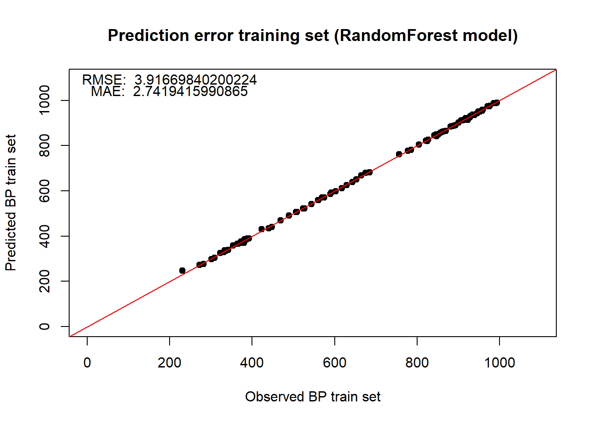

Prediction of boiling points using WikiData and Machine learning techniques
Introduction
This GitHub Page is a final product of assignment 2, requested by the course MSB1015 (Scientific Programming). The goal is to create a GitHub Page (notebook) for the following analysis. The boiling points of alkenes need to be predicted based on data from WikiData; Smiles are used to enrich the data using the rcdk package in R, afterward, machine learning is applied. See the GitHub repository for more details.
Workflow
Data extraction from wikidata (alkene name, smiles, boiling point).
Data expansion and cleanup (using rcdk).
Apply machine learing techniques using the expanded data, to predict boiling point (glm, plsr, randomForest).
Compare results.
Script block 1: INSTALL PACKAGES
# Install packages if needed and load, or just load packages
if (!requireNamespace("BiocManager", quietly = TRUE))
install.packages("BiocManager", ask = F)
# Insert all packages in requiredpackages
requiredpackages <-
c("WikidataQueryServiceR","ggplot2","backports","rJava","rcdk","pls","randomForest",
"gplots","curl","data.table","caret","ggfortify","tidyverse")
for (i in requiredpackages) {
if (!requireNamespace(i, quietly = TRUE))
BiocManager::install(i, ask = F, dependencies = c("Depends", "Imports"))
require(as.character(i), character.only = TRUE)
print(i)
}## Loading required package: WikidataQueryServiceR## Warning: package 'WikidataQueryServiceR' was built under R version 3.5.3## [1] "WikidataQueryServiceR"## Loading required package: ggplot2## Warning: package 'ggplot2' was built under R version 3.5.3## [1] "ggplot2"## Loading required package: backports## Warning: package 'backports' was built under R version 3.5.3## [1] "backports"## Loading required package: rJava## Warning: package 'rJava' was built under R version 3.5.3## [1] "rJava"## Loading required package: rcdk## Warning: package 'rcdk' was built under R version 3.5.3## Loading required package: rcdklibs## Warning: package 'rcdklibs' was built under R version 3.5.3## [1] "rcdk"## Loading required package: pls##
## Attaching package: 'pls'## The following object is masked from 'package:stats':
##
## loadings## [1] "pls"## Loading required package: randomForest## Warning: package 'randomForest' was built under R version 3.5.3## randomForest 4.6-14## Type rfNews() to see new features/changes/bug fixes.##
## Attaching package: 'randomForest'## The following object is masked from 'package:ggplot2':
##
## margin## [1] "randomForest"## Loading required package: gplots## Warning: package 'gplots' was built under R version 3.5.3##
## Attaching package: 'gplots'## The following object is masked from 'package:stats':
##
## lowess## [1] "gplots"## Loading required package: curl## Warning: package 'curl' was built under R version 3.5.3## [1] "curl"## Loading required package: data.table## Warning: package 'data.table' was built under R version 3.5.3## data.table 1.12.2 using 6 threads (see ?getDTthreads). Latest news: r-datatable.com## [1] "data.table"## Loading required package: caret## Warning: package 'caret' was built under R version 3.5.3## Loading required package: lattice##
## Attaching package: 'caret'## The following object is masked from 'package:pls':
##
## R2## [1] "caret"## Loading required package: ggfortify## Warning: package 'ggfortify' was built under R version 3.5.3## [1] "ggfortify"## Loading required package: tidyverse## Warning: package 'tidyverse' was built under R version 3.5.3## -- Attaching packages --------------------------------------- tidyverse 1.2.1 --## v tibble 2.1.3 v purrr 0.3.2
## v tidyr 1.0.0 v dplyr 0.8.3
## v readr 1.3.1 v stringr 1.4.0
## v tibble 2.1.3 v forcats 0.4.0## Warning: package 'tibble' was built under R version 3.5.3## Warning: package 'tidyr' was built under R version 3.5.3## Warning: package 'readr' was built under R version 3.5.3## Warning: package 'purrr' was built under R version 3.5.3## Warning: package 'dplyr' was built under R version 3.5.3## Warning: package 'forcats' was built under R version 3.5.3## -- Conflicts ------------------------------------------ tidyverse_conflicts() --
## x dplyr::between() masks data.table::between()
## x dplyr::combine() masks randomForest::combine()
## x dplyr::filter() masks stats::filter()
## x dplyr::first() masks data.table::first()
## x dplyr::lag() masks stats::lag()
## x dplyr::last() masks data.table::last()
## x purrr::lift() masks caret::lift()
## x randomForest::margin() masks ggplot2::margin()
## x dplyr::matches() masks tidyr::matches(), rcdk::matches()
## x readr::parse_date() masks curl::parse_date()
## x purrr::transpose() masks data.table::transpose()## [1] "tidyverse"Script block 2: SETTINGS
# General settings
options(stringsAsFactors = F)
# Select 80% for train, 20% for test
Randomfactor = 0.8
linearAlkanesOnly = 0 # 1 = yes; 0 = no.
# Setting seed to keep consistent results
set.seed(1)Script block 3: FUNCTIONS
# Root Mean Squared Error
RMSE = function(yact, ypred){
sqrt(mean((yact - ypred)^2))
}
# Mean Absolute Error
MAE = function(yact, ypred){
mean(abs(yact - ypred))
}Script block 4: QUERY CALL
endpoint = "https://query.wikidata.org/bigdata/namespace/wdq/sparql"
query = 'SELECT DISTINCT ?comp ?compLabel ?bp ?bpUnitLabel ?CC WHERE {
?comp wdt:P31/wdt:P279* wd:Q41581 ;
p:P2102 [
ps:P2102 ?bp ;
psv:P2102/wikibase:quantityUnit ?bpUnit
] .
?comp wdt:P233 ?CC .
SERVICE wikibase:label { bd:serviceParam wikibase:language "[AUTO_LANGUAGE],en". }
}
'
dataObj = query_wikidata(query)## 134 rows were returned by WDQSScript block 5: BOILINGPOINT UNIT CONVERSION
#C to Kelvin:
# 0°C + 273.15 = 273,15K
idC = which(dataObj$bpUnitLabel=="degree Celsius")
for( i in 1:length(idC)){
dataObj[idC[i],]$bp = (dataObj[idC[i],]$bp + 273.15)
dataObj[idC[i],]$bpUnitLabel = "kelvin"
}
#F to Kelvin:
# (0°F − 32) × 5/9 + 273.15 = 255,372K
idF = which(dataObj$bpUnitLabel=="degree Fahrenheit")
for( i in 1:length(idF)){
dataObj[idF[i],]$bp= (dataObj[idF[i],]$bp - 32) * (5/9) + 273.15
dataObj[idF[i],]$bpUnitLabel = "kelvin"
}
#additional failsafe if other metrics than Celsius and Fahrenheit are added (other metrics are removed)
dataObj = dataObj[which(dataObj$bpUnitLabel=="kelvin"),]
# Make backup
dataObjBACKUP = dataObj
# Finalize data structure
dataObj = data.frame(dataObjBACKUP$compLabel, dataObjBACKUP$bp, dataObjBACKUP$CC)
names(dataObj) = c("Comp","bp","CC")Script block 6: FILTERS AND OUTLIER HANDLING
if(linearAlkanesOnly == 1){
dataObj = dataObj[-grep(pattern = "\\(",x = dataObj$CC),]
}
# hexatriacontane 770.15 K (497 C); in wikidata under pressurised condition!
dataObj$bp[dataObj$Comp=="hexatriacontane"] = 770.15
# Dooctacontane 958.05 K (684.9 c); IN WIKIDATA AS 881.85 k
dataObj$bp[dataObj$Comp=="Dooctacontane"] = 958.05Script block 7: DATA OVERVIEW
# Get a general idea of how the data looks; disregarding branch effects; amount of C in compound linked to BP
CClength_crude = nchar(gsub(pattern = "\\)",replacement = "",x = gsub(pattern = "\\(",replacement = "",x = dataObj$CC)))
plotCClength = CClength_crude[order(CClength_crude)]
BPplot = dataObj$bp[order(CClength_crude)]
# Should result in a exponential function-like graph
plot(plotCClength,BPplot,main = "Carbon - boilingpoint relation",xlab = "Amount of carbon atoms in alkene",ylab = "Boiling point (Kelvin)")
# Show how the data is distributed (focussing on bp)
hist(dataObj$bp,breaks=20,main = "Boiling point frequency distribution",xlab = "Boiling point (Kelvin)",ylab = "Frequency")
Script block 8: DATA ENRICHMENT
sp <- get.smiles.parser()
dc <- get.desc.categories()
for( i in 1:length(dataObj$CC)){
# Get smiles from result query and add information
molecule <- parse.smiles(dataObj$CC[i])[[1]]
convert.implicit.to.explicit(molecule)
#formula <- get.mol2formula(molecule,charge=0)
# Store the found information
#dataObj$formula[i] = {formula} # S4 object cannot be transferred nicely
#dataObj$mass[i] = formula@mass
#dataObj$string[i] = formula@string
#dataObj$charge[i] = formula@charge
# M/z values
#dataObj$isotopes[i] = {get.isotopes.pattern(formula,minAbund=0.1)}
# Fingerprint? values
#dataObj$fingerprint[i] = {get.fingerprint(molecule = molecule)}
# Create a dataframe which contains all info possible to extract using the descriptors
datafr = dataObj$Comp[i]
for(o in 1:5){
dn <- get.desc.names(dc[o])
datafr = cbind(datafr, eval.desc(molecule, dn))
}
# This is done now as it will break if descriptors change (amount)
if(exists("mydata")){
mydata[i,] = datafr
}else{
mydata = datafr
}
}
# Make backup from data, easy for testing (resetting)
mydataBACKUP = mydata
mydata = mydataBACKUP
# Remove names
descs = mydata[,-1]Script block 9: LATENT VARIABLE FILTER
# Remove NAs n stuff
descs <- descs[, !apply(descs, 2, function(x) any(is.na(x)) )]
descs <- descs[, !apply( descs, 2, function(x) length(unique(x)) == 1 )]
if(T){
# Correlate the descriptors with the boiling point; if these are linked, they should add some info
corMatrix = cor(descs , dataObj$bp)
corMatrix = as.data.frame(corMatrix[order(abs(corMatrix),decreasing = T),])
# select first 15 components:
componentNames = rownames(corMatrix)[1:15]
descs = descs[,match(colnames(descs), x = componentNames)]
}
# - BLOCKED - Old method, keepin this inside for further reference
if(F){
mydata = mydataBACKUP
descs = mydata[,-1]
# crude way to extract 'important' features based on correlation
descs <- descs[, !apply(descs, 2, function(x) any(is.na(x)) )]
descs <- descs[, !apply( descs, 2, function(x) length(unique(x)) == 1 )]
r2 <- which(cor(descs)^2 > .9, arr.ind=TRUE) # when keeping this high, the prediction improves
r2 <- r2[ r2[,1] > r2[,2] , ]
descs <- descs[, -unique(r2[,2])]
}
# - BLOCKED -
# should contain nAtomLAC; the amount of c atoms
if(!exists("descs$nAtomLAC")){
descs = cbind(descs, mydata$nAtomLAC)
names(descs)[dim(descs)[2]] = "n"
}else{
names(descs)[names(descs)=="descs$nAtomLAC"] = "n"
}
# Store resulting input file in my_data; as it is used everywhere
my_data = descs
# Finish prepare data
# Add and define the 'to be predicted' column
n_col <- ncol(my_data)
BoilPoint = n_col+1
my_data[,BoilPoint] = dataObj$bp
names(my_data)[BoilPoint] = 'BoilPoint'
# Ordered data is required later
my_data = my_data[order(my_data$BoilPoint),]Script block 10: DATA SUBSETTING FOR MACHINE LEARNING
# Define variables
sample.length = length(my_data[,1])
# Higher probability to select lower (underrepresented) samples;
# improves range of model, increases fit and prediction power.
# Ranges from 1 (select) to 0.5 (chance)
sample.biasprob = 1 - 1:sample.length /max(sample.length )/2
# Make data objects
samples.upper = sample(sample.length , floor(length(my_data[,1])*Randomfactor),prob = sample.biasprob ) #get all unique samples (not frequecies) and sample 80%
#plot(samples.upper[order(samples.upper)])
samples.total = (1:length(my_data[,1])) # all unique samples (not frequecies)
samples.lowerl = samples.total[!samples.total %in% samples.upper] #which samples are sampled
# Subset data
data.train = my_data[samples.upper,]#contains all upper
data.train = as.data.frame(data.train)
data.test = my_data[samples.lowerl,]#contains all lower
data.test = as.data.frame(data.test)
# Remove nas
data.train=data.train[!is.na(data.train[,1]),]
data.test=data.test[!is.na(data.test[,1]),]
# Create standardized object
xNN = data.train[,-(BoilPoint)]
yNN = data.train[,BoilPoint]
dat = data.frame(xNN, y = yNN)
# Remove samples with in datasets n < 1
data.train = dat[dat$n>0,]
yactual.train = data.train$y
data.test = data.test[data.test$n>0,]
yactual.test = data.test$BoilPointScript block 11: PLS MODEL
# Define training control method; 10 - k - cross validation
train_control <- trainControl(method="cv", number=10)
# Train the model
model <- train(y~., data=data.train, trControl=train_control, method="pls")
# Find out what model is best
print(model)## Partial Least Squares
##
## 106 samples
## 16 predictor
##
## No pre-processing
## Resampling: Cross-Validated (10 fold)
## Summary of sample sizes: 96, 97, 96, 96, 94, 95, ...
## Resampling results across tuning parameters:
##
## ncomp RMSE Rsquared MAE
## 1 78.87058 0.9119517 68.48250
## 2 61.55186 0.9448577 48.80862
## 3 20.02921 0.9935239 15.35512
##
## RMSE was used to select the optimal model using the smallest value.
## The final value used for the model was ncomp = 3. # Find out most important variables
Varimportance = varImp(model)
cat(paste("Best model fit with", model$bestTune, "latent components \n"))## Best model fit with 3 latent components cat(paste("Latent components:",paste(rownames(Varimportance$importance)[order(decreasing = T,Varimportance$importance$Overall)][1:model$bestTune[1,]],collapse = ", "),"\n"))## Latent components: VAdjMat, Kier1, khs.ssCH2 plot(Varimportance, main="Varible importance in PLS model \n") # Predict test set
ypredCARET.pls.test <- model %>% predict(data.test)
# Root mean squared error
RMSE.pls.test = RMSE(yactual.test, ypredCARET.pls.test)
RMSE.pls.test## [1] 16.09627 # Results in: 10.61
# Mean absolute error
MAE.pls.test = MAE(yactual.test, ypredCARET.pls.test)
MAE.pls.test## [1] 14.97591 # Results in: 10.00
# Plot ypred vs yactual of test data
plot(yactual.test, ypredCARET.pls.test,
xlab="Observed BP test set", ylab="Predicted BP test set",
pch=19, xlim=c(0, ceiling(max(yNN)*1.1)), ylim=c(0, ceiling(max(yNN)*1.1)),main="Prediction error test set (PLS model)")
abline(0,1, col='red')
text(200,ceiling(max(yNN)*1.1),paste("RMSE: ",RMSE.pls.test))
text(200,ceiling(max(yNN)*1.1)-50,paste("MAE: ",MAE.pls.test))
# Predict training data; check overfitting
ypredCARET.pls.train <- model %>% predict(data.train)
# Root mean squared error
RMSE.pls.train = RMSE(yactual.train, ypredCARET.pls.train)
RMSE.pls.train## [1] 19.94546 # Results in: 13.60
# Mean absolute error
MAE.pls.train = MAE(yactual.train, ypredCARET.pls.train)
MAE.pls.train## [1] 14.84614 # Results in: 10.26
# Plot ypred vs yactual of training data
plot(yactual.train, ypredCARET.pls.train,
xlab="Observed BP train set", ylab="Predicted BP train set",
pch=19, xlim=c(0, ceiling(max(yNN)*1.1)), ylim=c(0, ceiling(max(yNN)*1.1)),main="Prediction error training set (PLS model)")
abline(0,1, col='red')
text(200,ceiling(max(yNN)*1.1),paste("RMSE: ",RMSE.pls.train))
text(200,ceiling(max(yNN)*1.1)-50,paste("MAE: ",MAE.pls.train))Script block 12: RANDOM FOREST MODEL
# Define training control method; 10 - k - cross validation
train_control <- trainControl(method="cv", number=10)
# Train the model
model <- train(y~., data=data.train, trControl=train_control, method="rf")
# Find out what model is best
print(model)## Random Forest
##
## 106 samples
## 16 predictor
##
## No pre-processing
## Resampling: Cross-Validated (10 fold)
## Summary of sample sizes: 94, 97, 95, 96, 96, 95, ...
## Resampling results across tuning parameters:
##
## mtry RMSE Rsquared MAE
## 2 17.69042 0.9945412 10.589629
## 9 16.65938 0.9950118 9.707753
## 16 17.02925 0.9947011 9.839256
##
## RMSE was used to select the optimal model using the smallest value.
## The final value used for the model was mtry = 9. # Find out most important variables - BLOCKED - this doesnt work for rf
if(F){
Varimportance = varImp(model)
cat(paste("Best model fit with", model$bestTune, "latent components \n"))
cat(paste("Latent components:",paste(rownames(Varimportance$importance)[order(decreasing = T,Varimportance$importance$Overall)][1:model$bestTune[1,]],collapse = ", "),"\n"))
plot(Varimportance, main="Varible importance in rf model \n")
}
# Predict test set
ypredCARET.rf.test <- model %>% predict(data.test)
# Root mean squared error
RMSE.rf.test = RMSE(yactual.test, ypredCARET.rf.test)
RMSE.rf.test## [1] 8.300245 # Results in: 10.61
# Mean absolute error
MAE.rf.test = MAE(yactual.test, ypredCARET.rf.test)
MAE.rf.test## [1] 5.254375 # Results in: 10.00
# Plot ypred vs yactual of test data
plot(yactual.test, ypredCARET.rf.test,
xlab="Observed BP test set", ylab="Predicted BP test set",
pch=19, xlim=c(0, ceiling(max(yNN)*1.1)), ylim=c(0, ceiling(max(yNN)*1.1)),main="Prediction error test set (RandomForest model)")
abline(0,1, col='red')
text(200,ceiling(max(yNN)*1.1),paste("RMSE: ",RMSE.rf.test))
text(200,ceiling(max(yNN)*1.1)-50,paste("MAE: ",MAE.rf.test))
# Predict training data; check overfitting
ypredCARET.rf.train <- model %>% predict(data.train)
# Root mean squared error
RMSE.rf.train = RMSE(yactual.train, ypredCARET.rf.train)
RMSE.rf.train## [1] 7.61216 # Results in: 13.60
# Mean absolute error
MAE.rf.train = MAE(yactual.train, ypredCARET.rf.train)
MAE.rf.train## [1] 3.798079 # Results in: 10.26
# Plot ypred vs yactual of training data
plot(yactual.train, ypredCARET.rf.train,
xlab="Observed BP train set", ylab="Predicted BP train set",
pch=19, xlim=c(0, ceiling(max(yNN)*1.1)), ylim=c(0, ceiling(max(yNN)*1.1)),main="Prediction error training set (RandomForest model)")
abline(0,1, col='red')
text(200,ceiling(max(yNN)*1.1),paste("RMSE: ",RMSE.rf.train))
text(200,ceiling(max(yNN)*1.1)-50,paste("MAE: ",MAE.rf.train))
Script block 13:
print("the end")## [1] "the end"